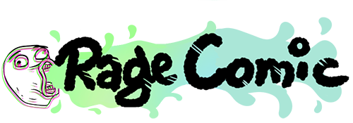

如果今天發生一件讓人很想罵髒話的事，感覺做成短漫是一個相當不錯的選擇。
起源
Rage Comic（梗漫），是一種在網路上開放式漫畫的總稱，沒有特定的主角，但是有常見的角色和表情包，網友們可以自行排列組合、打上自己想寫的字，內容可能是日常經驗，或是讓你賭爛到想罵WTFㄉ任何值得分享的事情。
這種素人製作漫畫的歷史已經超過十年，2008年，一位匿名使用者上傳了一則四格漫畫到4chan上，描述一個人上廁所時，被大便濺起的水沾到屁股而感到生氣。
這被多數人視為Rage Comic的始祖，也奠基了Rage Comic簡單、粗糙的畫風，從那之後，也開始出現許多類似風格的網路漫畫。
散佈
隨著這類漫畫越來越多，2009年1月，Reddit開設了一個讓使用者上傳自己梗漫的FFFFFFFUUUUUUUUUUUU版（f7u12，因為有7個f12個u），因為有了專屬園地，梗漫產生得更加快速，許多經典的表情也一一出現，比如「Okay guy」、「Forever Alone」等。
也就是說，Rage Comic裡不同的表情會有不同的創作者，他們在有意或無意間替Rage Comic新添了更多角色，豐富了製作梗漫的素材，創作者們因而有更多選擇，做法也越來越多元。
另類名人加持
除了用簡單筆觸勾勒出來的人物外，還有一些漫畫版的名人頭像，例如：姚明、歐巴馬、成龍、金正恩等，也隨著大家的愛用，同樣被算入梗漫之中。